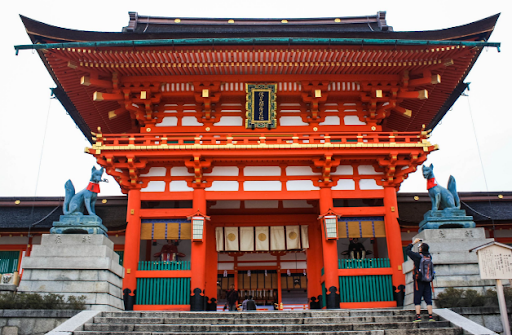

후시미 이나리 신사(伏見稲荷大社, Fushimi Inari Taisha)는 일본 교토에 위치한 대표적인 신사로, 일본 신도(神道)의 주요 신사 중 하나입니다. 이 신사는 특히 붉은 토리이 문(鳥居)이 이어진 경로로 유명하며, 다음은 후시미 이나리 신사의 주요 특징입니다후시미 이나리 신사는 711년에 창건되었으며, 일본 신도의 신으로서 농업, 풍요, 상업의 신인 이나리 신(稲荷神)을 모시고 있습니다. 이 신사는 원래 후시미 지역의 이나리 산에 위치했으나, 현재는 교토 시내에 위치하고 있습니다.후시미 이나리 신사는 일본 신도에서 매우 중요한 역할을 하는 신사로, 풍요와 상업적 성공을 기원하는 사람들이 많이 방문합니다. 이 신사는 상업적 성공과 안녕을 기원하는 사람들이 기부하는 작은 토리이 문들을 설치하기도 합니다.후시미 이나리 신사는 일본의 신도 문화와 전통 건축을 잘 보여주는 중요한 신사로, 경관과 역사적 의미 모두에서 큰 가치를 지니고 있습니다.